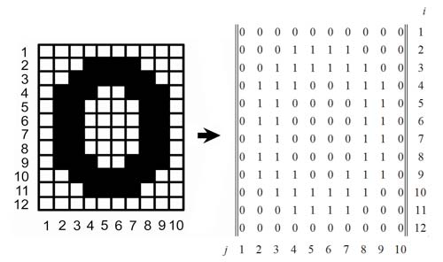
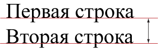
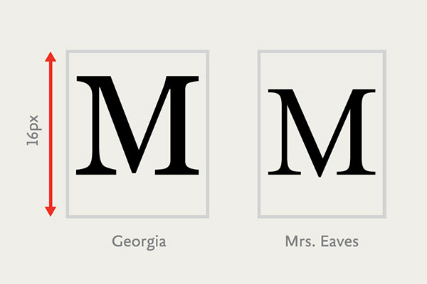

Символы могут быть различными по назначению:
Были распространены в эпоху матричных принтеров и экранов с низким разрешением и представляли собой набор растровых изображений каждого символа в виде битмапа.
Векторная графика основана на математических формулах геометрических объектов.
Современные шрифты описывают символы с помощью тех самых формул, что позволяет их масштабировать без потери качества, как и любое другое векторное изображение.
Базовая линия — воображаемая прямая линия, проходящая по нижнему краю прямых знаков без учёта свисаний и нижних выносных элементов.
Высота прописных знаков — расстояние от базовой линии до верхней линии прописных, то есть высота прописных букв без учета свисаний.
Высота строчных знаков — расстояние от базовой линии до верхней линии строчных, то есть высота строчных букв без свисаний и выносных элементов.
Интерлиньяж, межстрочный интервал — расстояние между базовыми линиями строк. В вебе данный термин чаще всего называют высотой строки.
Кегельная площадка — верхняя прямоугольная часть ножки литеры, на которой расположено выпуклое (печатающее) изображение знака.
В цифровом шрифте кегельная площадка важна при проектировании шрифта как прямоугольник, в который вписывается изображение знака.
Гарниту́ра в типографике — набор из одного или нескольких шрифтов в одном или нескольких размерах и начертаниях, имеющих стилевое единство рисунка и состоящих из определённого набора типографских знаков.
С помощью font-size можно определить размер шрифта элемента. Размер шрифта определяется как высота от базовой линии до верхней границы кегельной площадки.
Размер шрифта можно установить с помощью
единиц измерения длины.
Подробно про единицы измерения длины
можно почитать
тут и
тут
px — размер шрифта в пикселях. Так как задание динамического размера требуется нечасто, эта единица измерения является наиболее популярной.
p {
font-size: 10px;
}
Здесь не написано ничего интересного, уверяю вас. Никакого заговора нет, масоны и рептилоиды — выдумка рентв, всем △!
em/% — размер шрифта в зависимости от размера шрифта родителя. Эти размеры – относительные, они определяются по текущему контексту.
div {
font-size: .6em; /* то же, что и 60% */
color: #0b0;
}
Большой заголовок
Подпись к заголовку
Заголовок поменьше
Подпись к заголовку
html {
font-size: 16px;
}
h2 {
font-size: 60px;
}
div {
font-size: 2rem;
}
Большой заголовок
Подпись к заголовку
pc, pt, ch, ex — типографские единицы измерения.
cm, mm, q, in — абсолютные единицы из реального мира.
vh, vw, vmin, vmax — единицы измерения относительно viewport'а.
Устанавливается двумя типами значений: единицами измерения длины или безразмерным множителем. В чем же разница?
body { font-size: 20px; }
.line-height-mult { line-height: 1.5; }
.line-height-em { line-height: 1.5em; }
.line-height-pixel { line-height: 30px; }
...
...
...
Swinging against the wind Keeping the noose tight on her skin God will save her, the father's Lucifer, they say Oh do they
Does that make it okay? Sin finds the culprit Unexplained circumstances cause people to fear, Deceive and act so irrationally
Up in the bedroom she's seeing ghosts Demons in clothes, people she knows Swear on the bible that earns their trust Fractions of fiction dismissed so start your hunt
Что, если мы укажем размер шрифта у параграфов явно?
body { font-size: 20px; }
.line-height-mult { line-height: 1.5; }
.line-height-em { line-height: 1.5em; }
.line-height-pixel { line-height: 30px; }
...
...
...
p { font-size: 30px; }
Swinging against the wind Keeping the noose tight on her skin God will save her, the father's Lucifer, they say Oh do they
Does that make it okay? Sin finds the culprit Unexplained circumstances cause people to fear, Deceive and act so irrationally
Up in the bedroom she's seeing ghosts Demons in clothes, people she knows Swear on the bible that earns their trust Fractions of fiction dismissed so start your hunt
Для изменения данного расстояния предусмотрено
свойство letter-spacing со
значением в любой
единице измерения длины, кроме процентов.
.zero {
letter-spacing: normal;
}
.first {
letter-spacing: -2.5px;
}
.second {
letter-spacing: 1em;
}
We are the sheep that rose against the shepherd We are the ones you led astray
letter-spacing: -2.5px;Embrace the light in your heart Not the one in the sky
letter-spacing: 1em;Saints and sinners rejoice We will all rot together
Для изменения данного расстояния предусмотрено
свойство word-spacing со
значением в любой
единице измерения длины, кроме процентов.
.zero {
word-spacing: normal;
}
.first {
word-spacing: -10px;
}
.second {
word-spacing: 1em;
}
We're reaching for the sky now stretching out our limbs
word-spacing: -10px;to the birds to the clouds To the people who cut us down
word-spacing: 1em;We're building mountains higher Today! Today! Today!
Характеристики рисунка одной гарнитуры:
.h3 {
font-variant: normal;
}
.h3 {
font-variant: small-caps;
}
font-style: normal;
oblique; /* наклонный */
italic; /* курсивный */
font-weight: normal;
bold; /* жирное начертание */
light; /* светлое начертание */
100 /* thin */
200 /* extra light */
300 /* light */
400 /* normal */
500 /* medium */
600 /* semi-bold */
700 /* bold */
800 /* extra bold */
900 /* black */
font-stretch: ultra-condensed; /* 50% */
extra-condensed; /* 62.5% */
condensed; /* узкий, 75% */
semi-condensed; /* 87.5% */
normal; /* нормальный, 100% */
semi-expanded; /* 112.5% */
expanded; /* широкий, 125% */
extra-expanded; /* 150% */
ultra-expanded; /* 200% */
.block {
font-family: 'My Font Condensed'
}
.block {
font-family: 'My Font Expanded'
}
Браузер попытается «наклонить»/«насытить» обычное начертание, используя для этого упрощенные алгоритмы.
С засечками / без засечек
Пропорциональные / непропорциональные
Классификация шрифтов в веб:
Существует ряд шрифтов, которые есть практически в каждой ОС, таким образом их использование считается наиболее безопасным.
| Без засечек | Arial |
| С засечками | Times New Roman |
| Моноширинный | Courier New |
body {
font-family: 'Arial';
}
body {
font-family: Arial;
}
body {
font-family: Arial, Helvetica, Calibri;
}
body {
font-family: Arial, Helvetica, Calibri, /* ?????? */;
}
body {
font-family: Arial, Helvetica, Calibri, /* Times New Roman */;
}
body {
font-family: Arial, Helvetica, Calibri, sans-serif;
}
@font-face {
font-family: myCustomFont;
src: url(myCustomFont.woff2) format(woff2),
url(myCustomFont.woff) format(woff)
}
body {
font-family: myCustomFont, sans-serif;
}
@font-face {
font-family: myCustomFont;
src: local('Native Custom Font'),
url('myCustomFont.woff2') format('woff2'),
url('myCustomFont.woff') format('woff');
}
А можно указать диапазон используемых в шрифте символов
с помощью unicode-range:
@font-face {
font-family: myCustomFont;
unicode-range: U+000-5FF; // только латинские символы
src: local('Native Custom Font'),
url('myCustomFont.woff2') format('woff2'),
url('myCustomFont.woff') format('woff');
}
Но, как всегда, есть нюансы. И проблемы.
@font-face {
font-family: Sooo Good Font;
src: url(soGoodFont.woff2);
font-style: normal; /* обычный */
}
@font-face {
font-family: Sooo Good Font;
src: url(soGoodFontItalic.woff2);
font-style: italic; /* курсивный */
}
.normal {
font-family: Sooo Good Font; /* обычный */
}
.italic {
font-family: Sooo Good Font;
font-style: italic; /* курсивный */
}
у дизайнера
Существуют сервисы-генераторы, которые помогают собрать
весь пакет нужных форматов в несколько кликов.
Самый популярный —
Font Squirell
Они также помогают значительно уменьшить вес благодаря выбору
только нужных символов шрифта или диапазонов, например,
только кириллических и латинских символов.
Почитать подробнее про различия сервисов можно
тут
А еще существуют сервисы, которые предоставляют шрифты.
Самый популярный — Google Fonts
Условные этапы работы браузера со шрифтами:
Что же видит пользователь в этот момент?
Сейчас активно внедряется свойство font-display. Оно определяет, как именно браузер будет загружать и рендерить подключенный в @font-face шрифт.
@font-face {
font-family: myFont;
font-display: auto; /* block, swap, fallback, optional */
src: url('myFont.woff2') format('woff2'),
url('myFont.woff') format('woff');
}
С помощью font-display можно повлиять на длину периодов блокировки (невидимый текст) и подмены (сколько браузер ждёт загрузки шрифта).
body {
font: 14px; /* не будет работать */
font: italic Arial; /* это тоже */
font: 14px Arial, sans-serif;
font: 14px / 1.2 Arial, sans-serif;
font: italic bold 14px Times New Roman;
font: small-caps italic 700 14px / 20px Arial, sans-serif;
}
Осуществляется с помощью свойства text-align.
.uno { text-align: left; }
.dos { text-align: start; }
.tres { text-align: right; }
.quatro { text-align: end; }
.cinco { text-align: center; }
.seis { text-align: justify; }
По левому краю
По краю начала текста
rtlעל קצה תחילת הטקסט
По правому краю
По краю, противоположному краю начала текста
rtlלאורך הקצה, בקצה הנגדי של תחילת הטקסט
По центру
По всей ширине WTF?
We need as much text as possible, my comrade, otherwise we can't see what's "justify" doing
And again to compare with left alignment:
We need as much text as possible, my comrade, otherwise we can't see what's
"justify"
"left" doing
Устанавливается с помощью свойства text-decoration, которое имеет три законных значения overline, line-through и underline. Оно позволяет нам сделать так:
text-decoration не наследуется дочерними элементами, и им нельзя отменить «украшение», которое применено к родителю.
Текст надчеркнут.
Текст по прежнему надчеркнут.
Текст надчеркнут. Текст по прежнему надчеркнут.
Свойство text-transform позволяет менять регистр букв с помощью трех значений: capitalize, lowercase и uppercase.
регистр прям как у названий песен
В HTML ЭТОТ ТЕКСТ НАПИСАН КАПСОМ // ПОВЕРЬТЕ НА СЛОВО
а этот не капсом // тоже придется поверить!!!
Для задания величины отступа используется свойство text-indent. Допустимо использовать любые единицы измерения длины и их отрицательные значения.
.eins {
text-indent: 5%;
}
.zwei {
text-indent: -1em;
}
Let's talk about the old days, Let's talk about your friends, Let's talk about the summer And how you wish it wouldn't end. Did I forget to tell you, How pretty you looked in that dress? In the first time that I saw you, In the first time that I saw you, In the first time that I saw you, You cleaned the mess from my head.
Lets go walking on the boardwalk, Dip our feet into the sea. Lets find ourselves lost for hours, Until we find ourselves a drink. Lets talk that sun into setting, Just need the sound of your voice. Need that calming and the comfort, Something to drown out the noise.
Цвет текста задается с помощью свойства color.
h1 {
color: #f00;
}
div {
color: rgba(255, 0, 0, .3);
}
Почитать буквально обо всём, что связано с цветами, можно тут.
color устанавливает так называемый «цвет переднего плана» (в противовес background-color — цвету фона), поэтому он имеет влияние на многие свойства.
p {
color: #0f0; /* зеленый цвет текста */
border: 5px solid; /* рамка будет зеленой */
box-shadow: 0 0 50px; /* и тень элемента */
text-shadow: 4px 4px 10px; /* и тень текста */
}
Кислотный dj, хей Кислотный music, хей Кислотный people, хей Давай, давай веселей Кислотный dj, хей Кислотный music, хей Кислотный people, хей веселей
Свойства, которые не наследуют цвет от color автоматически, могут сделать это при помощи ключевого слова currentColor.
h1 {
color: #f0f;
background-color: currentColor; /* цвет фона тоже станет #f0f */
}
Создадим тень со сдвигом в 4 пикселя вправо вниз,
по умолчанию она будет такого же цвета, что и текст:
h1 {
text-shadow: 4px 4px;
}
Закрасим её красным цветом:
h1 {
text-shadow: 4px 4px #f00;
}
Добавим размытие в 10 пикселей:
h1 {
text-shadow: 4px 4px 10px #f00;
}
Укажем еще одну тень со сдвигом
влево вверх зеленого цвета:
h1 {
text-shadow: 4px 4px 10px #f00,
-4px -4px 10px #0f0;
}
h1 {
text-shadow: 0 0 10px #fff,
0 0 20px #fff,
0 0 30px #fff,
0 0 40px #ff00de,
0 0 70px #ff00de,
0 0 80px #ff00de,
0 0 100px #ff00de,
0 0 150px #ff00de;
}
h1 {
background: #aaf;
text-shadow: 0 1px 0 #ccc,
0 2px 0 #c9c9c9,
0 3px 0 #bbb,
0 4px 0 #b9b9b9,
0 5px 0 #aaa,
0 6px 1px rgba(0,0,0, .1),
0 0 5px rgba(0,0,0, .1),
0 1px 3px rgba(0,0,0, .3),
0 3px 5px rgba(0,0,0, .2),
0 5px 10px rgba(0,0,0,.25),
0 10px 10px rgba(0,0,0, .2),
0 20px 20px rgba(0,0,0,.15);
}
В европейских языках чтение текста происходит слева направо,
в то время как есть языки, где текст читается справа
налево. При смешении в одном документе разных
по написанию символов в системе юникод,
их направление определяется браузером из характеристик
и содержимого текста.
div {
column-count: 2;
}
div {
column-count: 2;
column-gap: 300px;
}
div {
column-count: 2;
column-rule: 2px solid #0f0;
}
div {
column-width: 200px;
column-rule: 2px solid #fff;
}
В европейских языках чтение текста происходит слева направо,
в то время как есть языки, где текст читается справа
И ТУТ В ТЕКСТ ВРЫВАЕТСЯ ЗАГОЛОВОК
налево. При смешении в одном документе разных
по написанию символов в системе юникод,
их направление определяется браузером из характеристик
и содержимого текста.
div {
column-count: 2;
column-rule: 2px solid #fff;
}
h3 {
column-span: all;
font-style: italic;
margin: 10px;
}
Чуть более подробно о колонках можно почитать здесь.
| Name | Surname | Points |
|---|---|---|
| Cloud | Strife | 13 |
| John | Cena | 37 |
| Akakiy | Stanislavovskiy | 666 |
| Konstantinopolskiy | Ruslan | 2 |
Переполнение контента следует скрыть
c помощью
overflow: hidden:
| Name | Surname | Points |
|---|---|---|
| Cloud | Strife | 13 |
| John | Cena | 37 |
| Akakiy | Stanislavovskiy | 666 |
| Konstantinopolskiy | Ruslan | 2 |
Как видно, буквы обрезались посередине.
Для этого предусмотрено свойство переполнения текста text-overflow, имеющее два значения: clip и ellipsis.
Нам нужно значение ellipsis:
| Name | Surname | Points |
|---|---|---|
| Cloud | Strife | 77 |
| Vladimir | Putin | 146 |
| Akakiy | Stanislavovskiy | 666 |
| Konstantinopolskiy | Ruslan | 2 |
Осуществляется с помощью <br>:
Далеко-далеко за
словесными горами в
стране гласных
и согласных живут рыбные тексты.
Далеко-далеко за
словесными горами в стране гласных
и согласных живут рыбные тексты.
Избавляют от «лесенок» при выравнивании по левому краю:
Далеко-далеко за словесными горами в стране гласных и согласных букв живут рыбные тексты. Вдали от всех живут они в буквенных домах на берегу Семантика большого языкового океана.
Сводят к минимуму разброс ширины пробелов:
Далеко-далеко за словесными горами в стране гласных и согласных букв живут рыбные тексты. Вдали от всех живут они в буквенных домах на берегу Семантика большого языкового океана.
Вот так выглядит текст с автопереносами:
Далеко-далеко за словесными горами в стране гласных и согласных букв живут рыбные тексты. Вдали от всех живут они в буквенных домах на берегу Семантика большого языкового океана.
Как этого добиться?
1. Указываем lang для параграфа
2. Устанавливаем автопереносы с помощью свойства hyphens
Далеко-далеко за словесными горами в стране
гласных и согласных букв живут рыбные тексты.
Вдали от всех живут они в буквенных домах на берегу
Семантика большого языкового океана.
p {
hyphens: auto;
}
Пример сервиса, расставляющего переносы.
Устанавливаются c помощью <wbr>:
Далеко-далеко за словесными
горами в стране гласных и со гласных букв
живут рыбные тексты. Вдали от всех живут они в
бук венных домах на берегу Семантика
большого языкового океана.
Да
Мы можем заставить текст всегда «разрываться» в любом месте. Для этого используется свойство word-break со значением break-all. есть еще значение keep-all, но работает оно только для китайского, корейского и японского языков, so who cares again?
零 {
word-break: normal;
}
一 {
word-break: break-all;
}
Этот текст будет переноситься по словам, чисто, чинно, благородно. Всё в столбец, как этот чертяка так делает?
Этому тексту плевать вообще, он такой теряет буквы, ничего толком не прочесть, беда совсем, еще дергается как монстры из silent hill
Существуют ситуации, когда слово или словосочетание не нужно разрывать ни при каких обстоятельствах. Простейший пример:
Тут нужно что-то написать, чтобы текст сдвинул `mark` в неудобное положение.
Правило hyphens: auto; использует примерно никто,
ибо пока оно не работает нормально
Некрасиво.
Перенос нужно запретить:
mark {
white-space: nowrap;
}
Красиво.
И white-space умеет еще много чего.
We ache to be transparent
We run from the "open" arms;
The facade of something greater than ourselves (здесь просто дополнительный текст, чтобы не помещался в строку)
And we're left to coexist with infestation
Our history is cursed
Through the past, present, and future
If they're created in his image
Then his image is disgusting...
And even he can't wipe you clean
p {
white-space: pre;
}
p {
white-space: pre-line;
}
p {
white-space: pre-wrap;
}
p {
white-space: nowrap;
}
Примерный список того, что можно сделать:
p::first-line {
font: 25px Courier New;
letter-spacing: 6px;
}
Текст в первой строке будет выглядеть как китайско-русская инструкция
купленного на таганчике барахла. И не спрашивайте откуда
я это знаю и почему вообще показываю как этот шрифт имитировать.
Текст в первой строке будет выглядеть как китайско-русская инструкция купленного на таганчике барахла. И не спрашивайте откуда я это знаю и почему вообще показываю, как этот шрифт имитировать.
Cписок пополнился:
p::first-letter {
font: italic 50px Times New Roman;
margin: 15px;
padding: 10px;
color: #f00;
background: #0ff;
border: 2px dashed #0f0;
}
Хочется сделать наиболее вырвыглазный вариант, отвратный прям максимально и бесповоротно
А еще лучше — в два параграфа, чтобы вдвойне вырвиглазнее
Хочется сделать наиболее вырвыглазный вариант, отвратный прям максимально и бесповоротно
А еще лучше — в два параграфа, чтоб вдвойне вырвиглазнее
.ya-ya::first-letter {
color: #f00;
}